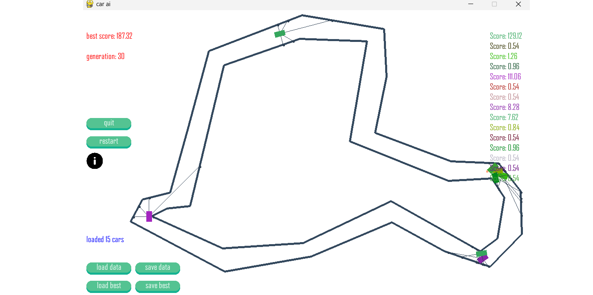
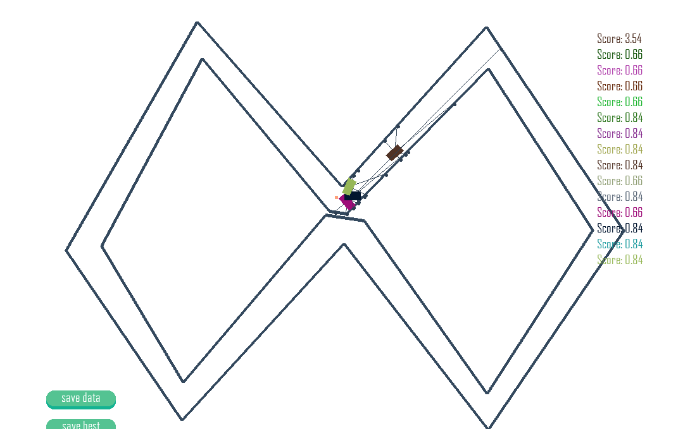
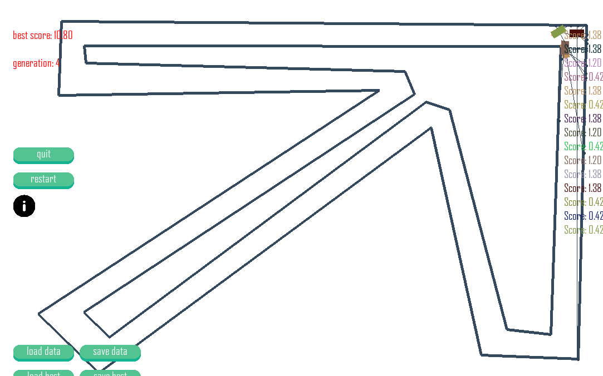
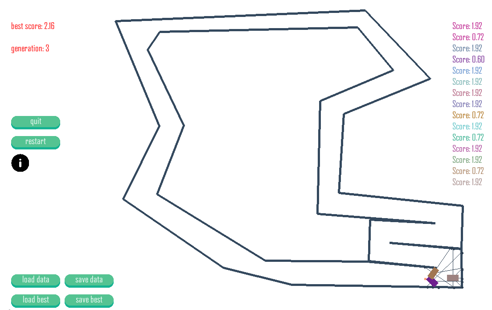
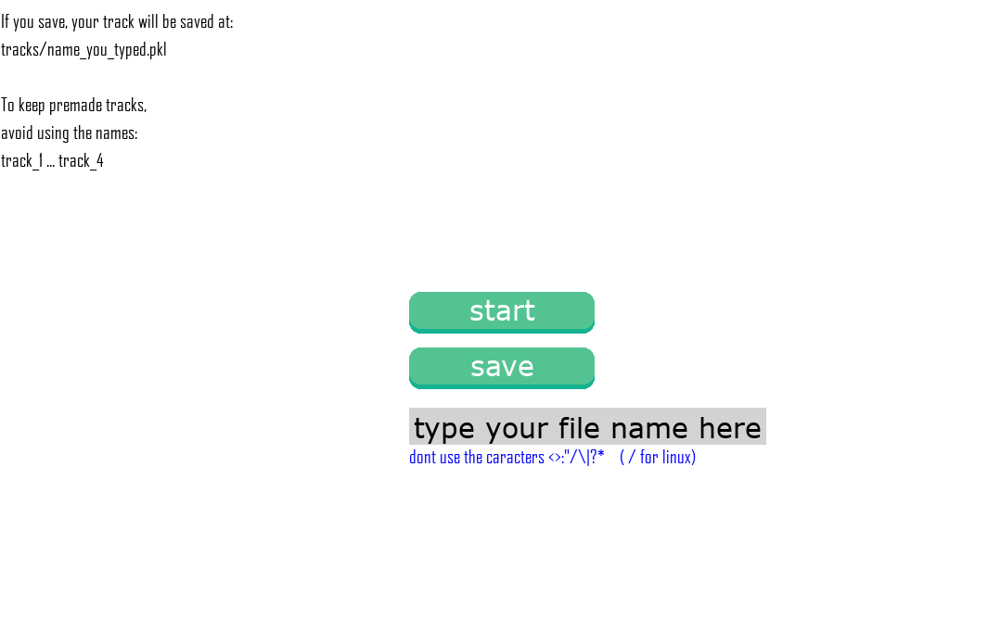
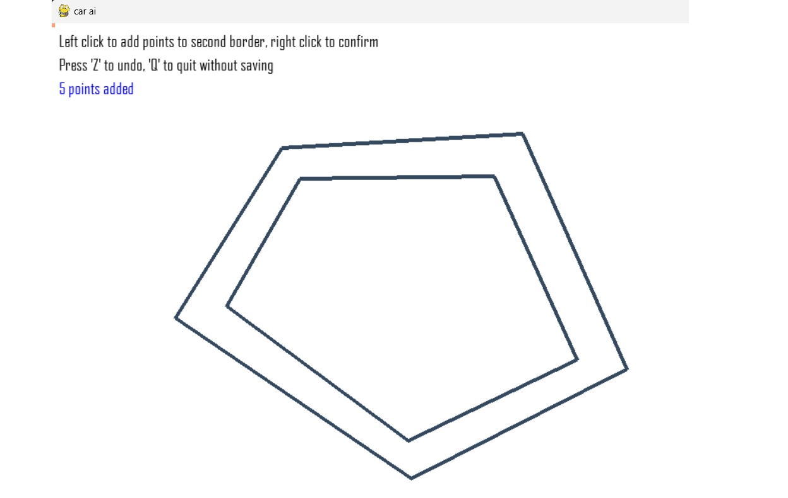

AI Car Simulation
This project simulates cars learning to drive on custom tracks using a genetic algorithm. The goal is for cars to navigate tracks effectively by evolving their neural network brains over generations.






How the Algorithm Works
1. Initialization
- A population of cars is created, each with a neural network (the "brain") initialized with random weights and biases.
2. Simulation
- Each car navigates the track using sensors to detect distances to track boundaries.
- The neural network processes sensor data to decide steering actions.
- Cars accumulate a fitness score based on performance (e.g., distance traveled without crashing).
3. Evolution
- After all cars crash or finish, the genetic algorithm selects the top-performing cars as parents.
- Crossover: Parent neural networks are combined to produce offspring.
- Mutation: Random changes are introduced to offspring networks to explore new solutions.
4. Next Generation
- The new population replaces the old, and the process repeats for multiple generations.
- Over time, cars improve their ability to navigate tracks.
Project Structure
| Path | Description |
|---|---|
| genetic_algorithm_car/ | Main project directory |
| ├── core/ | Contains core functionality of the project |
| │ ├── brain.py | Neural network logic for the cars |
| │ ├── car.py | Car class managing sensors, movement, and brain |
| │ ├── simulation.py | Main simulation loop and population management |
| │ ├── track.py | Track creation and management |
| │ └── ui.py | UI elements (buttons, prompts) |
| ├── data/ | Save pickle files for brains and generations |
| ├── icon/ | Icon files |
| ├── track/ | Custom track pickle files |
| ├── setup.py | Setup file |
| └── main.py | Entry point for the program |
How to Use
1. Setup
- Install dependencies:
git clone https://github.com/beloof/genetic_algorithm_car
cd genetic_algorithm_car
pip install .
2. Run the Simulation
- Execute the main script to start the simulation:
python main.py
- Create or load a track and observe the cars learning over generations.
3. Features
- Save and load generations to continue training.
- Create, save and load tracks.
- Observe performance metrics like fitness scores and generations.
Training Advice
- Avoid using wide paths; the agents will go in circles and their fitness will explode.
- Starting agents near a corner can speed up progress during the initial generations.
To be Added
Planned future enhancements:
- Unit Testing: Implement unit tests to ensure code reliability and correctness.
- Performance Optimization and GPU Acceleration: Leverage GPU computation (e.g., via CUDA) to accelerate neural network operations and simulation.
- Hyperparameter Tuning: Use Bayesian optimization (e.g.,
BayesSearchCV) to find optimal mutation rates, population sizes, and network architectures. - Improved Fitness Function: Develop a more robust fitness function to better evaluate car performance and behavior.
- Diversity in Reproduction: Adjust reproduction logic to discourage identical individuals and maintain population diversity.
- Bug Fixes and Code Cleanup: Add comments and docstrings, and remove or update junk code.